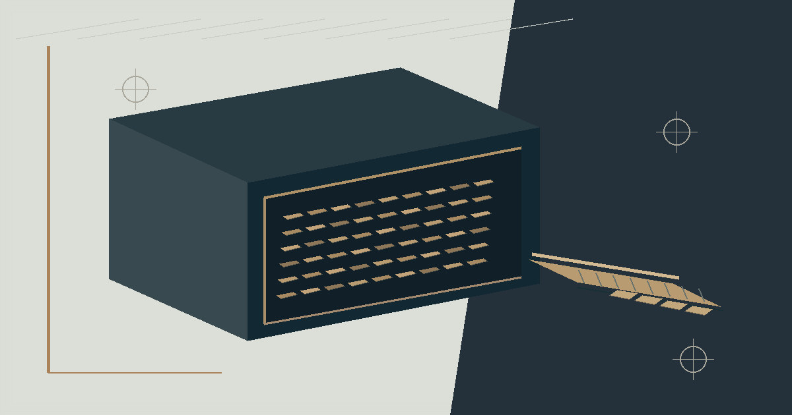

Investigations / Token supply & bridge risk
INJ’s 95% Bridge Wallet Is Not the Whale Story It Appears to Be
The Ethereum balance is real. The conclusion often attached to it is wrong. Injective’s harder questions concern cross-chain claims, native issuance and what “circulating supply” actually measures.
· Historical market and blockchain observations, principally from November 13, 2026. Times are UTC unless otherwise noted.

A wallet that holds nearly 95% of a token’s Ethereum supply looks alarming. It invites a familiar crypto-market narrative: one address, enormous concentration, an extraordinary amount of possible selling pressure. But with Injective (INJ), that reading turns an accounting address into an imagined trader.
The 95% figure is real enough to deserve scrutiny. On November 13, Ethereum’s Peggy Bridge Proxy held 94,973,222.831972486 INJ from an ERC-20 supply of exactly 100 million. The remaining 5,026,777.168027514 tokens were outside that address. The first number describes custody inside a bridge; the second describes ERC-20 inventory elsewhere on Ethereum. Neither, by itself, measures how much of the whole Injective economy a single investor controls.1
What stands out to me is not the size of the escrow account, but how easily it can invert the question. The tokens sitting inside the bridge are not the same thing as tokens that a holder can freely sell on an exchange. To understand the risk, the investigation has to move beyond the wallet leaderboard—to native-chain issuance, pledged and unsettled claims, validator staking, and the mechanics that move INJ between networks.
The address is a bridge, not an investment thesis
Injective’s Ethereum INJ token contract is 0xe28b3b32b6c345a34ff64674606124dd5aceca30. Its first reported transaction dates to October 17, 2020. Its Solidity constructor minted 100 million ERC-20 INJ to an initial custodian. The contract has 18 decimal places and Blockscout reported roughly 50,575 holder addresses during the November investigation. These are properties of the Ethereum representation, not a census of all native INJ holders.2
The primary custody address is 0xF955C57f9EA9Dc8781965FEaE0b6A2acE2BAD6f3, an EIP-1967 upgradeable proxy identified as Peggy. Its listed implementation was 0x100DCB8B78C608d148Cb207aC3875935DfE6abdc. The proxy’s first transaction dates to June 25, 2021. An upgradeable bridge deserves contract-governance scrutiny, but upgradeability is a risk attribute—not proof that a malicious upgrade occurred.1
Where the Ethereum ERC-20 supply sat
The difference changes the risk question. A bridge holding 94.973 million token units may reflect the bulk of a fixed supply parked in custody. If the asset is native-origin, the tokens outside Ethereum escrow are the starting point for examining claims that may need to be satisfied on the originating chain. That leaves about 5.027 million Ethereum tokens to investigate—not 94.973 million allegedly waiting to hit the market.
Concentration of custody is not concentration of intent. A bridge address is a balance-sheet location, not a person with a trading strategy.
This is not a declaration that bridge risk disappears. It points to a more precise threat model: who can upgrade or pause the bridge, whether a withdrawal can be completed, how native and Ethereum liabilities are accounted for, and whether each pending movement is properly settled. A mislabeled whale metric hides these questions rather than answering them.
There are two INJ supplies, and confusing them distorts the story
Ethereum’s original 100 million INJ allocation is fixed in the token implementation inspected here. Native Injective supply is not fixed at that figure. On November 13, a public Injective mainnet bank-supply reading reported 123,733,553.52714475 native INJ. The staking pool reported 56,132,783.32894510 INJ bonded and about 2.693 million INJ in its not-bonded pool. The native issuance parameter was 4.40% annualized at that observation.3
123.734 million
56.133 million
4.40%
100.000 million
A September 15 figure cited in an October 2026 SEC-filed registration statement placed native total supply at approximately 122.896 million INJ, including roughly 58.038 million bonded. The November 13 reading was about 837,746 INJ higher. That arithmetic is consistent with positive net supply expansion between the two dated observations; it does not attribute the entire change to one mechanism or provide a daily mint-and-burn ledger.
Injective also operates burn and other supply mechanisms, which is why terms such as deflationary need a time horizon and a definition. Burns can occur while outstanding native units still increase. Likewise, bonded stake is economically committed, but it is not necessarily destroyed or permanently removed from future market availability. The protocol’s 21-day undelegation period matters to the timing of potential supply, not to whether bonded units exist.
Bonded INJ within native supply
My interpretation is that the stronger diligence question is not whether an attractive headline burn figure exists, but what happened to net liquid supply after staking changes, issuance, burns, unbonding and cross-chain transfers. A single circulating-supply number cannot answer that question without exposing its methodology.
What the native bridge state says—and what it cannot settle
The contemporaneous Injective Peggy parameters matched the Ethereum bridge address and the ERC-20 token contract. They identified inj as the native denomination. The native Peggy module account was inj1979qcq0kdz72w0k9rsxcmfmagx2cydrs40q2xg. Its reported bank balance was about 0.001 INJ, while the separately configured segregated-wallet address showed no bank balances. The pending-send-to-Ethereum response contained empty arrays for transfers in batches and unbatched transfers, and the Peggy module-state response contained an empty batches array.4
Those are meaningful observations, but not a solvency verdict. It would be tempting to divide 0.001 native INJ by 5.027 million Ethereum tokens outstanding, announce an enormous shortage and move on. That would assume every Ethereum token must be backed by a balance held at the queried native module address. It would also assume the current system uses a native custody model that requires that specific account to hold the full corresponding inventory.
That assumption is not established. A February 2026 public source snapshot reviewed for this case contained an unsupported-operation path in Peggy’s native-origin withdrawal routine. If the relevant deployed behavior differed from older lock-and-release documentation, comparing the module wallet to an ERC-20 supply could manufacture a deficit that the actual claim structure does not imply. Historical source-code evidence is not the same as runtime proof of the deployed chain state.
To establish a real bridge backing ratio, the assets eligible to settle claims must be identified under the effective design, and the outstanding claims must be independently enumerated at compatible settlement times. The necessary accounting identity is straightforward in principle, less so in practice:
Backing coverage = eligible settlement assets ÷ outstanding enforceable bridge claims
The numerator is not “whatever is in the first account someone checked.” The denominator is not native total supply. Claim mapping, native module permissions, pending attestations and unresolved cross-chain messages determine both. A negative conclusion from incompatible accounting categories would be as misleading as the original whale narrative.
The transfer trail is evidence of activity, not a market sell order
A bounded sample of 20 Ethereum transfers involving Peggy over November 11–13 contained about 1,967.90 INJ arriving and 11.72 INJ leaving, for a sampled inward difference of roughly 1,956.19 INJ. At least one inbound transaction used the bridge-related sendToInjective method. But that sample was not an exhaustive transfer history, and it was not paired transaction by transaction with finalized native-chain attestations.5
Even a transfer to a known exchange address would not automatically prove selling: it could be custody, collateral movement, market making or settlement. Exchange ownership labels need dates and corroboration; internal exchange ledgers remain opaque to public chains. The temptation to call every deposit bearish should be resisted for exactly the same reason the 95% wallet statistic needed skepticism.
Price action was lively. It did not resolve the accounting question.
On November 13, the OKX INJ-USDT spot market showed a historical last-price observation of 8.092 USDT and a 24-hour range of 7.170–8.319 USDT. An INJ-USDT perpetual observation was 8.077 USDT, with around $6.76 million in venue-specific open interest. The latest sampled eight-hour funding settlement was negative, approximately −0.00424%. These were single-venue readings, not a consolidated picture of global market exposure.
A separate 99-completed-day-bar OKX sample ending November 12 suggested a 30-day close-to-close gain of about 7.56%, but also a 20-day annualized realized volatility of roughly 107% using daily log returns and a 365-day convention. The 14-day average true range was about 0.649 USDT per INJ. The latest closing price in that sample was 8.222 USDT, above its 20-day simple average of about 7.783 but near the 50-day average of 7.790. The 20-day high and low were 8.594 and 6.828 USDT.
Completed-bar price change by lookback
| Lookback | Close-to-close change |
|---|---|
| 7 days | −1.07% |
| 14 days | +15.27% |
| 30 days | +7.56% |
That is a volatile market with an intermediate rebound and no simple confirmation that the risk originates with the bridge’s large custody balance. Negative funding on one perpetual venue may indicate a crowded short-leaning funding environment, but it cannot prove net market-wide speculative positioning. A spot-to-perpetual last-price difference is likewise not an executable arbitrage calculation.
The market evidence matters as context. It tells me the consequences of being wrong about liquidity or settlement could be amplified by substantial day-to-day price swings. It does not demonstrate that those swings were caused by a bridge deficit, an undisclosed whale or an impending unlock.
The bearish case is not imaginary. It is simply different.
A defensible bear case starts with the possibility that circulating token claims, native issuance and on-chain usage are being compared under inconsistent definitions. Active issuance means a burn narrative can coexist with expansion in total native units. A large upgradeable bridge is an operational concentration of trust and technical dependencies even when its balance represents custody. If settlement fails, users could face delayed withdrawals or impaired cross-chain liquidity without any speculative whale selling at all.
A serious bullish counterargument also exists. A substantial proportion of native supply was bonded, the Ethereum contract was longstanding, the bridge addresses matched native configuration, and the available native Peggy state showed no pending batch backlog at the observation. An established transfer architecture could be operating as designed. None of those facts proves the bridge is fully collateralized or that a token offers attractive prospective returns; they merely defeat the claim that a 95% address share, by itself, signals imminent catastrophe.
Three developments would materially change my assessment: a reconciled, finalized cross-chain liability ledger demonstrating a shortfall or a clean match; an effective runtime or governance change altering redemption rights, permissions or privileged control; or sustained, verified movement from identified custodians toward trading venues, with native unbonding and market depth accounted for. Without those, a dramatic concentration statistic remains an insufficient basis for a directional call.
The real lesson is about denominators
Crypto dashboards are excellent at counting visible tokens. They are less reliable at explaining the obligations behind those tokens. A bridge contract may have the largest balance in a holder table because its very purpose is to hold inventory on behalf of a cross-chain system. A staking dashboard may call an amount locked even though it can enter an unbonding queue. A token site may emphasize burns while native supply grows. All three statements can be descriptively true without measuring the same economic thing.
For INJ, the core observations are unusually clear: roughly 94.973 million Ethereum tokens were inside Peggy, roughly 5.027 million were elsewhere, and native supply stood around 123.734 million on November 13, with about 56.133 million bonded. The simple story of one whale controlling 95% of an ecosystem does not survive that accounting context. The stronger claim—that the bridge was conclusively solvent or insolvent—does not follow either.
My conclusion is narrower, and more useful: the concentration is real; the whale interpretation is not. The unresolved risk sits in the bridge’s enforceable claims and effective settlement design. That is where the investigation belongs.